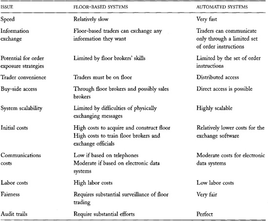

Chapter 27: Floor Versus Automated Trading Systems
Advances in communications and computing technologies now allow exchanges to completely automate their trading systems. Many exchanges have done so, and many brokers, ECNs, and dealers have created automated trading systems.
Despite these developments, many of the most liquid exchanges in the world still employ floor-based trading systems. The New York Stock Exchange, the Chicago Board of Trade, the Chicago Mercantile Exchange, the New York Mercantile Exchange, and almost all U.S. options exchanges primarily use floor-based trading systems. Although traders on their floors now rely extensively on electronic systems to route orders and report confirmations, they still arrange trades essentially as they did when these markets first started.
If the floor-based market structures at these exchanges encourage traders to offer liquidity, eliminating their floors would be foolish. However, if other reasons account for the liquidity in these markets, switching to electronic trading may be desirable.
When floor-based trading systems and electronic trading systems have competed head-to-head, the results have been mixed. During the 1980s, the London Stock Exchange was the most important market for large French stocks. In 1989, the Paris Bourse introduced an automated electronic trading system. Since then, much of the trading in French stocks has migrated from London to Paris. More recently, the electronic German DTB futures exchange wrested trading in German T-bond futures from the floor-based London International Financial Futures Exchange (LIFFE). Neither example, however, provides definitive evidence for or against floor-based trading because other events have influenced the outcomes. The market share of the Paris Bourse grew following the 1994 repeal of a French transaction stamp tax that traders formerly avoided by trading in London. Likewise, the German T-bond futures contract moved from LIFFE to DTB in response to an effort by German banks to repatriate their market.
In contrast, brokers, dealers, exchanges, and ECNs have created many automated systems for trading NYSE stocks and U.S. equity options. Some of these systems have been notably successful. Optimark---discussed in chapter 26---failed spectacularly. The Arizona Stock Exchange proved to be a disappointment to people who believe that markets would benefit from electronic call markets. Instinet, Archipelago, and Island ECN have not taken substantial market share from the New York Stock Exchange despite their tremendous success competing against the electronic Nasdaq Stock Market. The electronic International Securities Exchange obtained a 16 percent share of U.S. equity option trading in the issues it trades, within 18 months of its 2000 launch. However, it has not yet displaced the traditional floor-based options markets. The most successful electronic competitors of the NYSE have been third market dealers, like Bernard L. Madoff Investment Securities and Knight Capital Markets. Their automated trading systems provide very quick service primarily to retail traders represented by discount brokers.
The Bangladeshi Stock Exchange and the New York Stock Exchange
In 1999, the Bangladeshi Stock Exchange replaced its trading floor with an automated trading system. At the same time, the New York Stock Exchange considered where to build a new trading floor.
The continued commitment of the New York Stock Exchange to its trading floor may be its most important decision at the turn of the millennium. The members and officers of the Exchange are fully aware of its significance. They believe that the tremendous success of the NYSE is due in large part to its floor-based market structure. They also know that they may lose much, if not all, of their franchise if they are wrong.
Floor-based oral auctions and automated rule-based auctions are very similar. Both are order-driven markets that match buy orders to sell orders using very similar rules. Their primary difference lies in the technologies they use to arrange these matches. Traders in oral auctions arrange trades by personally exchanging information among themselves, whereas in automated markets, computers arrange the trades.
Since the two market structures are so similar, exchange officials, regulators, and traders naturally consider which is best. There is no simple answer. Both structures have strengths and weaknesses.
In this chapter, we consider the arguments for and against these two trading structures. Our discussion examines how they differ in fairness, convenience, capacity, speed, efficiency, and cost.
27.1 FAIRNESS
Two concepts of market fairness concern traders. Traders want their markets to operate fairly, and they want fair access to those markets. In operationally fair markets, trading rules are uniformly applied, and no cheating occurs. In fair access markets, all traders have an equal chance to take advantage of any opportunities that arise.
27.1.1 Operational Fairness
Many traders believe that automated trading systems are the fairest of all market structures. Automated systems do only what they are programmed to do. They implement their trading rules exactly and without exception. They expose orders only as instructed, and only to those traders to whom the system permits orders to be exposed.
In contrast, fairness in oral auctions depends on the skill and honesty of the traders who arrange the trades. Traders must be highly skilled to follow the trading rules faultlessly when the market is active, and when prices are moving quickly. They must follow those rules honestly even when doing so may cause them to lose an advantage.
Although most oral auctions are quite fair, all oral auction markets have suffered from well-documented trading scandals. These scandals usually involve front running, inappropriate order exposure, fraudulent trade assignment, or prearranged trading by dishonest brokers.
Although these problems can also arise in automated markets, they cannot take place within their automated trading systems. Instead, dishonest brokers must conduct their frauds on the side.
Markets prevent these frauds by having officials supervise trading, by investigating suspicious trading practices reported by honest traders, and by maintaining---and reviewing---reliable audit trails. An audit trail records the submission and disposition of every order. Good audit trails include detailed information about everything that happens to each order. Regulators use audit trails to determine whether traders have violated trading rules. An accurate audit trail helps keep brokers honest.
Floor-based markets have extensive rules that govern how traders process orders and record trades. Markets design these rules to make the audit trail complete, reliable, and accurate. These rules require traders to time-stamp their orders when they receive them and when they fill them, to record trades sequentially, and to report trades immediately.
What Would You Think?
Eli needed to roll a 10-contract short futures position in the Dow Jones Industrial Average Index futures from June to September contracts. Via the Internet, he submitted a spread order to buy 10 June contracts and sell 10 September contracts with a limit of 75, premium to the sell side. The DJIA index futures contracts trade in a pit on the floor of the Chicago Board of Trade.
About a half hour later, Eli queried his broker's Internet site and discovered that he bought the June contracts for 11,060 and sold the September contracts at 11,130. The 70-point difference was less than the 75 points that Eli specified.
Since the nominal size of the DJIA contract is 10 times the Dow index, each point is worth 10 dollars per contract. For ten contracts, the five-point difference between the reported spread and the limit represents 500 dollars.
Eli naturally called his broker and inquired about the discrepancy. Since the broker did not follow his instructions, Eli could have refused to accept the trade, or he could have demanded that his broker make up the difference. The sales broker who answered the phone asked him to hold the line while she called the floor to inquire about the problem. One minute later, she reported that the floor incorrectly reported the trade price of the sale. She said that the September contract actually sold for 11,137 so that the spread trade occurred at 77 rather than 70. Eli was pleased with the result.
What really happened? Consider the following four alternatives:
A. Somebody incorrectly reported the trade, most probably due to a typo or a transcription error. Had Eli not reported the discrepancy, someone would have noted it later, and the broker would have properly adjusted Eli's account.
B. Somebody incorrectly reported the trade. Had Eli not reported the discrepancy, the broker might have pocketed the difference.
C. The floor trader executed the trade incorrectly by mistake. The trader or Eli's broker made up the difference and added two points to keep Eli happy.
D. The floor trader intentionally executed the trade incorrectly and hoped that Eli would not notice the mistake. The trader or broker made up the difference and added two points to keep Eli happy.
Most probably, A characterized what happened. However, if you believe that brokers may conspire to steal from their clients through fraudulent trade assignment or prearranged trading, and that the audit trail cannot detect all such frauds, the other alternatives are possible. Stories like this one tarnish the image of floor-based trading systems regardless of whether their origins are innocent or nefarious. If an automated trading system had arranged the trades, this story simply could not have occurred.
Automated trading systems easily produce complete and flawless audit trails of all activity that takes place within them. Many traders and regulators especially like these systems for this reason.
27.1.2 Fair Access
Markets provide fair access when all traders have equal access to the market. In such markets, no traders have special advantages over other traders. Few trading systems provide pure fair access.
In floor-based trading systems, floor traders have an advantage over off-floor traders. Floor traders can see and react to market developments well before off-floor traders can. Off-floor traders must obtain their information through market data systems, and they must respond through an order-routing system. The best market data systems report information in less than two seconds. The best order-routing systems pass orders from the client to a broker in less than five seconds. If the routing system requires a runner to physically deliver the order to a floor broker, the delay can be substantially longer. These delays allow floor traders to take advantage of opportunities before off-floor traders can.
Floor traders also can observe all market information revealed on an exchange floor, and not just what market data systems report. They are particularly interested in who is trading. This information can be valuable if you can guess why they want to trade or whom they represent. Floor traders also often ask whether an order represents the full size that a client wants to trade. Brokers who have a reputation for reliably reporting this information often can obtain better prices than other traders can. Traders who have access to floor information that market data systems do not report have a significant advantage over other traders.
In large, actively trading futures pits, being able to see and be seen, and being able to hear and be heard are very important. Thus, in some floor-based markets, human anatomy also affects the fairness of the trading. Physically large traders have some advantage over smaller traders because they can control the "real estate" within the pit that offers the best sight lines. They simply move to where they want to be and plant themselves. Although futures markets have rules against physical contact, bumping is common in futures pits. Big traders tend to get the best spots. Tall traders have some advantage over short traders because they can see and be seen more easily. Traders with loud voices have some advantage over less audible traders because they can more easily attract attention when yelling. Traders with shrill voices---typically women---have an advantage over traders with bass voices because high-frequency sounds are highly directional. Their voices penetrate through the noise and easily attract attention. These anatomical characteristics give some traders an advantage in oral markets. They are meaningless in automated markets.
Automated markets favor traders with good keyboard skills and abstract visualization skills. These issues worry some traders when markets convert from floor-based systems to electronic systems.
Automated markets also favor traders who use computer systems to generate their orders. Such systems can monitor electronic data feeds and respond instantly to new information. Although this advantage is a natural consequence of faster trading technologies, many manual traders resent competing with such automated traders.
27.2 THE CONVENIENCE OF DISTRIBUTED ACCESS
A primary advantage of automated trading systems is that they allow traders to trade from their office desks rather than on an exchange floor. Aside from the obvious physical convenience, distributed access allows traders to sit next to their telephones, talk with their colleagues, and consult any data systems they want in support of their trading.
Such facilities are often difficult or impossible to arrange on an exchange floor. Floor traders who want instant access to telephone and data services must carry cell phones and portable terminals onto the trading floor. These instruments are often cumbersome, and a few markets still do not permit them.
Why Doesn't Microsoft Trade at the New York Stock Exchange?
Before 1990, most large U.S. corporations listed their stocks at the New York Stock Exchange when they grew large enough to meet its listing standards. Since then, Microsoft and some other large technology companies that list on the Nasdaq Stock Market have not switched to the NYSE.
Although there are many reasons why Microsoft has remained a Nasdaq stock, one is of particular note to this discussion. Microsoft creates and sells distributed access computing systems. Although Nasdaq does not organize automated auctions, it is a distributed access communications facility. Microsoft may have chosen to stay at Nasdaq for ideological reasons, among others.
The New York Stock Exchange hopes that Microsoft soon will choose to list its stock there. Many people believe that the NYSE is reserving the single character symbol "M" for Microsoft's ticker symbol.
27.3 SYSTEM CAPACITY
Electronic order matching technologies are much more scalable than oral order matching technologies. A technology is scalable when it can operate with equal or greater efficiency as it grows.
More traders can directly participate in an automated auction than in an oral auction. The number of traders who can effectively communicate with each other simultaneously limits the size of an oral auction. When too many traders try to participate in the same oral auction, they exceed its capacity to process information in an orderly fashion. When the number of traders bidding and offering is large, traders in an oral auction cannot easily keep track of who is quoting the best prices. They then may arrange trades that violate time precedence or even price priority.
Futures and options markets designate such disorderly markets as fast trading markets. The designation tells brokerage customers that they cannot expect their brokers to fill their orders at the best available prices when the market is trading fast. In the confusion of a fast market, the brokers may be unaware of the best trading opportunities.
Great numbers of traders can simultaneously interact in automated trading systems because these systems process order messages much faster than people can. Traders who use automated systems do not have to keep track of the best bid and offer. The system does it for them. They also do not have to arrange their trades. The system does it for them according to the market's trading rules. By supporting these functions, automated trading systems allow traders to focus their attention exclusively on creating and submitting their orders.
27.4 NEGOTIATION SPEED
Some floor dealers believe that they can trade more quickly on a floor than in an electronic market. They claim that they can shout a bid or offer, or accept a bid or offer, faster than they can enter this information into a computer. Although this probably is true, modern trading systems with graphical interfaces allow traders to enter information almost as fast as they could shout it out.
In any event, automated trading systems can complete trades much more quickly than individual traders can. In an oral auction, traders must manually record the price, size, counterpart, and instrument traded for each trade. In many markets, they also must record the time of the trade for the audit trail. Since trading requires both order entry and trade record keeping, traders can complete trades more quickly in electronic markets than in oral markets.
Oral trading, however, is undoubtedly faster than screen-based trading when traders want to negotiate their trade sizes. In such negotiations, traders often will not reveal the full size of their order unless they are sure that the other trader will trade the same size. After agreeing on a price, they often take turns proposing successively higher sizes. Negotiations stop when one trader proposes a greater size than the other trader will accept. The trade size is then the last agreed-upon size. This back-and-forth negotiation is very fast in oral auctions. When conducted through a computer that accepts only firm orders, the negotiation is much slower because the traders must split their orders into pieces to avoid displaying their full sizes.
Some electronic trading systems solve this order display problem by providing messaging systems that allow buyers and sellers to negotiate their trade sizes by exchanging messages on their screens. Liquidnet and Instinet are two such systems.
A second way some automated exchanges solve this order display problem is by allowing large traders to place limit orders with undisclosed size. The automated trading system is aware of the full order size, but it does not display the size to other traders. When the system arranges a match between an undisclosed hidden order and another order, the trade size is set to the minimum of the buy and sell order sizes. This procedure automatically accomplishes what oral traders must accomplish through their back-and-forth negotiations. Euronext, GLOBEX, and Island are markets in which traders often use undisclosed orders.
27.5 EXCHANGE OF INFORMATION ON TRADING FLOORS
Floor-based trading systems dominate electronic trading systems when brokers need to exchange information about buyers and sellers to arrange their trades. This is especially important when traders want to know information about their counterparts before agreeing to trade. Most electronic trading systems cannot provide this information. These issues are most important for traders who want to avoid trading with well-informed traders and with large price-discriminating traders.
All traders want to avoid trading with traders who are well informed about instrument values. When a well-informed trader wants to sell or buy, prices respectively are either too high or too low. Whoever trades with a well-informed trader therefore will probably regret trading. Since it usually is better not to trade than to trade at a poor price, traders prefer to trade only with uninformed traders.
Large traders often direct their brokers to trade only with institutions that they deem to be uninformed. They prefer to trade with institutions that have no research staffs, and that trade only to invest and disinvest rather than to speculate. They often refuse to trade with the proprietary trading groups of investment banks for fear of losing to them. Large traders can issue these instructions to their brokers because they can afford the significant commissions necessary to obtain these services, which require a lot of personal attention. When arranging large trades, traders carefully audit the motives of their trade counterparts.
Traders also do not want to trade with a large trader if that trader intends to continue trading on the same side. The market impact of the large trader's subsequent trades will generate immediate losses for the first traders who trade with the large trader. Traders therefore instruct their brokers to ask how much more size the other side wants to trade. If traders expect that more size will follow, they will offer less favorable terms to the large trader. Chapter 15 discusses these price discrimination issues.
On an exchange floor, a broker who has no additional size to fill will freely offer this information to obtain a better price. Brokers who have substantial additional size usually indicate that they either do not know, or cannot tell, how much additional size remains. If they say that they have no additional size, but soon return to do more size, they depreciate their reputations, and traders will no longer trust them. Brokers therefore do not like clients who lie to them about the full size of their orders. In most electronic trading systems, no similar mechanism allows traders to credibly indicate to each other how much additional size remains in their orders.
Finally, brokers often know of traders who might be interested in trading but have not yet submitted orders. Such traders may be unwilling to display their orders, or may not realize that they want to trade, until a broker approaches them with a suitable trading opportunity. Brokers in possession of this information often can arrange trades that otherwise might not be possible in an electronic environment.
27.6 MARKET DATA REPORTING
Automated systems report market data to the public much faster and much more accurately than floor-based trading systems. In floor-based systems, traders or market reporters must manually enter quotes and trades into the market information system to report them to the public. In automated systems, these data are already in electronic form. Automated systems therefore report faster and more accurately.
27.7 COST
Screen- and floor-based trading systems have different cost structures. Both systems have high initial creation costs. Screen-based systems generally have low operating costs, while floor-based systems are quite costly to operate.
27.7.1 Electronic Trading Systems
Fully automated trading systems require the construction of extensive data networks and data processing systems. These systems must validate users, accept orders, process orders, report trades, and report order status. These functions must be reliable, secure, and fast.
Reliability
Automated trading systems must be reliable because trading stops when the computer or network is down. If only part of the network is down, the affected traders will be extremely upset. Traders generally prefer that all trading halts if they cannot trade. Traders will not use unreliable systems.
To build reliable trading systems, markets must make substantial investments in redundant hardware and software systems. They must eliminate all single points of failure. Since failures are inevitable, given current technologies, markets also must invest in systems that allow them to recover from service interruptions. Markets---as well as brokers and dealers---employ many of the following processes to create reliable trading systems:
• They use fault-tolerant computer hardware.
• They build redundant computer systems.
• They build redundant network connections.
Some Examples of the Risks of Trading Through Unreliable Data Networks
• A trader submits a limit order to an electronic market. After the order is accepted, but before it trades, the trader's network connection fails. The trader does not know whether she has traded. If she knew that she had not traded, she would do the trade in another market. If she goes elsewhere without knowing whether her trade has executed, she risks trading twice.
• An arbitrageur uses an electronic order-routing system to buy Nasdaq 100 futures contracts and sell S&P 500 futures contracts. The arbitrageur initially buys the Nasdaq 100 contracts. His network connection then fails before he can sell the S&P 500 contracts to establish his hedge. If the Nasdaq 100 falls, he may suffer a great loss. If he had hedged his position, a correlated decrease in the S&P 500 probably would offset his loss.
• A short-term speculator uses an electronic market to buy a stock whose price he believes is momentarily depressed by a large uninformed seller. If he is right, he will profit when the price rebounds. If the large seller is well informed, however, the price probably will continue to fall. The speculator therefore intends to sell his position if it does not show a profit in the next 15 minutes. His network connection fails immediately after he buys the stock. If the market drops significantly before he can sell his position, he will lose substantially. (To protect against this possibility, the speculator could issue a stop loss order immediately after he purchases the stock. The stop order would represent his interests even if he cannot communicate with the market.)
• They route network connections through different vendors and through different physical paths.
• They provide backup power supplies.
• They replicate all systems at a remote "hot disaster recovery site," to which all activity can switch instantly if a disaster affects the primary processing site.
• They build significant excess capacity to protect against unexpected surges in demand.
• They maintain high-quality controls in software development.
• They maintain redundant data backup procedures.
• They test software thoroughly, using independent quality assurance groups.
Security
Automated trading systems must be secure because traders enter contracts involving large sums of money. Traders must be confident that computer hackers cannot tamper with their systems and that impersonators cannot fraudulently trade in their name. Markets build secure systems by using various data encryption systems and user authentication systems.
Speed
Automated trading systems must be fast because traders want instant access to markets. They want to see everything as it happens, and they want everything they do to happen instantly. These are reasonable requests. In active markets, prices may change every second. Traders who do not have the latest information will make poor decisions.
Communications Delays in GLOBEX
GLOBEX is an electronic trading system in which the futures contracts of the Chicago Mercantile Exchange and the MATIF (Marché à Terme International de France) trade after hours. It is located in Chicago. During development, traders in Australia were concerned that they would have slower access than traders who were close to Chicago. The system designers therefore designed the system to ensure that all traders would receive a minimum quality of service regardless of where they are in the world.
The issue is particularly important in computerized trading systems that allow their users to submit computer-generated orders. Computerized traders who can act most quickly on new information take advantage of market opportunities first. When two computerized trading systems employ the same trading strategies, the first to submit its orders will be the more profitable system. Since the difference in their submission times may be less than a millisecond, speedy connections are essential to trading successfully.
Although the GLOBEX communications network is extremely fast, traders for whom reaction time is of the essence undoubtedly place their computers in Chicago.
Costs
Several vendors sell fully automated exchange trading systems off the shelf. These have been particularly popular in emerging markets. Such systems typically are pure price-time precedence systems. They cost about 5 million dollars to purchase and set up.
Most electronic trading systems trade over private data networks. These networks are generally quite secure, and they provide high-quality service. They are quite expensive to operate, however, because they usually require dedicated leased lines that traders rarely use to their full capacity. In the future, many electronic trading systems probably will send encrypted data over the Internet. Which traders use Internet connections will depend on the speed they require, and the quality of service they can obtain from the Internet.
Once set up, electronic trading systems have small operating costs because everything is automated. The main operational costs are telecommunications costs and costs of adequately backing up data.
27.7.2 Floor-based Trading Systems
Exchanges that use floor-based trading systems must acquire or build suitable trading floors. Trading floors can be quite expensive, especially where real estate is expensive. A floor-based market also must have adequate telecommunications systems to route orders and to report market data and trade confirmations. These systems are comparable to those that electronic trading systems use. Floor-based markets also must invest in information display systems to assist their floor-based traders. Data vendors often provide these systems.
Actively traded floor markets must employ automated systems to support their trading. These systems may include electronic limit order books, broker paging systems, wireless order-routing systems for floor brokers, electronic reporting systems, and automatic execution systems for small orders. Costs of designing and implementing these systems can be quite high. When faced with these costs, many exchanges have chosen to switch to completely automated trading systems.
Floor-based trading systems are often quite expensive to operate. They require substantial labor to run. Brokers must arrange trades, reporters or traders must report the trades, officials must watch for trading abuses, and runners often must carry messages to and from brokers. Although new electronic trading systems are increasing broker productivity in some markets, floor-based trading systems will always be labor-intensive.
To operate well, floor-based trading systems require well-trained floor brokers. The brokers must know and follow the trading rules and procedures. They also must know how to best expose their orders and negotiate their trades. Although floor brokers provide special services that distinguish floor-based from automated trading systems, their substantial training makes employing them quite expensive.
Since floor brokers are often quite busy on the floor, they often cannot communicate directly with their clients. In that case, their clients give their orders to sales brokers who forward them to the floor brokers. The dependence on sales brokers increases the costs of floor-based trading systems. It also slows them down.
In contrast, electronic trading systems do not require well-trained brokers to operate. In many such systems, brokerage clients can access the market themselves, without the intermediation of their brokers. In such direct access systems, brokers merely guarantee and settle their clients' trades. Skilled brokers can provide valuable services to their clients in electronic environments by forming and implementing good order submission strategies. These brokers, however, are not necessary to run the system. Electronic trading systems are cheaper to operate because they do not require floor brokers and sales brokers.
27.8 SUMMARY
Floor-based trading systems and automated trading systems have different strengths and weaknesses. Consequently, they appeal to different clienteles. It is unlikely that one market structure will dominate all trading. Table 27-1 summarizes strengths and weaknesses of floor-based and automated trading systems.
Fully automated systems are very fast and generally cheap to use and operate. These characteristics ensure that active markets and markets that serve small traders will use automated trading systems extensively. In the U.S. equities markets, Bernard L. Madoff Investment Securities, Knight Capital Markets, and other dealers who offer automated execution systems provide excellent service to high volumes of small traders. Options markets tend to have high order volumes and small transaction sizes. We can expect that these markets will increasingly automate their trading.
TABLE 27-1.\ Floor Versus Automated Trading Systems

Fully automated systems also allow traders to exercise direct control over their orders. They therefore appeal to traders who do not trust their brokers or who do not want to pay for brokerage services. Large institutions that are concerned about how brokers expose their orders often favor automated systems if they are willing to employ their own buy-side traders.
Floor systems work best when traders need to exchange information about each other before they trade. They also work best when brokers need to actively search for traders to fill their orders. Since these advantages are most important to large traders, floor-based markets will serve primarily large institutional traders. The NYSE increasingly is an institutional market. Although people have been predicting the demise of the NYSE floor since the mid-1960s, it will not disappear as long as the NYSE floor traders continue to provide valuable services to traders that other systems cannot provide.
The communications and computational technologies that have enabled automated electronic markets allow these markets to exploit huge economies of scale. Consequently, many exchanges have merged to take advantage of scale economies. Many more will probably merge in the future.
In chapter 26, we noted that the order flow externality can make an incumbent market highly liquid even if it employs an inefficient trading technology. The continued existence of large floor-based markets therefore does not necessarily imply that their trading systems are better than fully automated trading systems.
27.9 SOME POINTS TO REMEMBER
• Electronic trading systems provide much better audit trails than floor-based trading systems.
• Electronic trading systems provide faster access to markets than floor-based trading systems.
• Floor-based trading systems are not as scalable as electronic trading systems.
• Floor-based trading systems allow brokers to exchange information that they cannot easily exchange in electronic trading systems. This information often is essential for arranging good trades for large traders.
• The order flow externality makes it impossible to conclude that large floor-based trading systems survive because their floor-based trading technologies are superior to electronic trading technologies.
27.10 QUESTIONS FOR THOUGHT
• How would you start an automated exchange that will compete with an established floor-based exchange? In particular, how can a new exchange overcome the order flow externality enjoyed by an incumbent exchange?
• What are the labor savings when a floor-based exchange converts to an automated exchange? What jobs no longer need to be done? What is the impact of the change upon dealers, floor brokers, sales brokers, exchange clerks, and surveillance officers? Where do the people who still have jobs work? Who pays for their office space and their communications infrastructure?
• Does the decision to use screen-based versus floor-based trading systems depend on the assets to be traded? Which type of trading system would be best suited to trading instruments in the following asset classes: futures, stocks, bonds, currencies, spot commodities, pollution credits, and options?